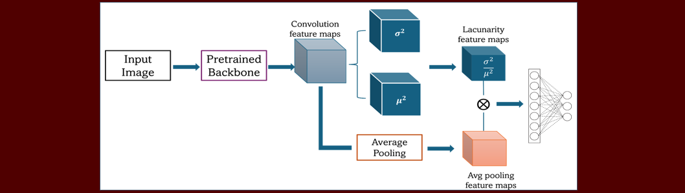

Publications
Selected papers in medical imaging AI, explainable AI, and texture-driven vision methods.
Manuscript in Progress

Task-Driven Evaluation of Image Quality Metrics for Lung CT AI Workflows
A. Mohan, collaborators
Comprehensive analysis of structural, perceptual, and statistical IQA behavior across NLST, VLST, and DLCS tasks.
SPIE 2024
Texture Analysis of Lung Cell Morphology After Nanoparticle Exposure
A. Mohan, T. Jefferis, C. Sayes, J. Peeples
CVPRW 2024

Lacunarity Pooling Layers for Plant Image Classification Using Texture Analysis
A. Mohan, J. Peeples
Paper link
ICMLA 2024
Spatial Transformer Network YOLO Model for Agricultural Object Detection
Y. Zambre, E. Rajkitkul, A. Mohan, J. Peeples
Paper link
IGARSS 2023

Quantitative Analysis of Primary Attribution Explainable AI Methods for Remote Sensing Image Classification
A. Mohan, J. Peeples
Paper link